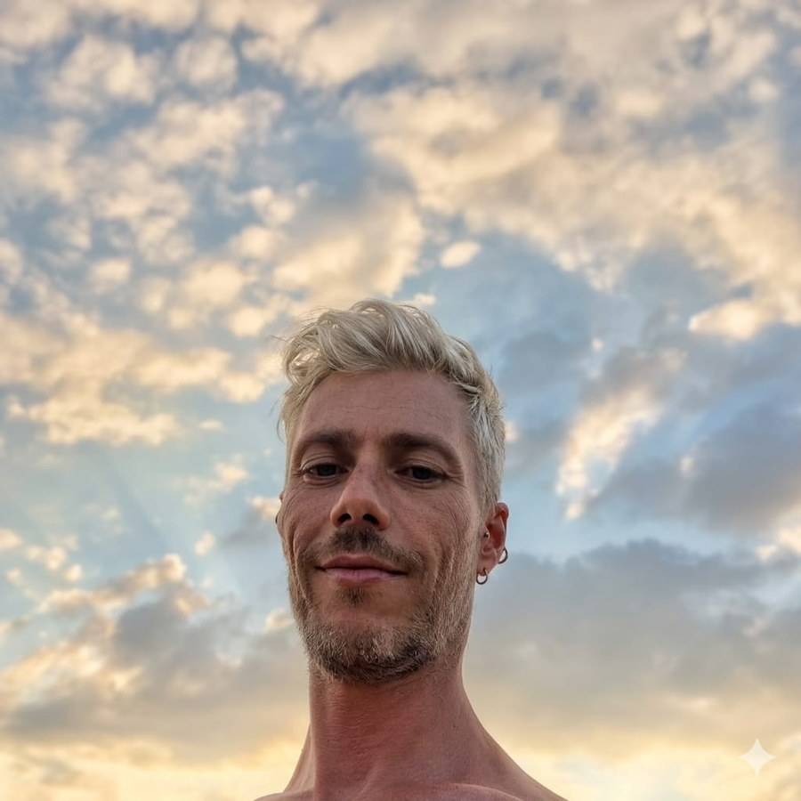

Maria Gorette
Co-fondatrice

Co-fondatore de «Custodi della Sorgente»
«Ogni passo che compio mi ricorda che apparteniamo alla stessa Sorgente.
Figli della stessa Madre e dello stesso Padre, siamo uniti da fili invisibili
ma profondissimi a ogni essere, a ogni elemento della Natura e all'intero Universo.
È nel rispetto di questo Mistero che continuo il mio cammino.»
La mia vita si è sviluppata lungo due percorsi che, solo con il tempo, ho compreso essere destinati a incontrarsi.
Da una parte la professione sanitaria. Dopo una lunga esperienza in Rianimazione e Terapia Intensiva, da oltre dieci anni lavoro come infermiere nell'ambito delle Cure Palliative, accompagnando persone e famiglie in uno dei momenti più delicati dell'esistenza. Sono stato docente nei Master Universitari dell'Università degli Studi di Milano in area critica e cardiologia e oggi ricopro il ruolo di Coordinatore Infermieristico di un'équipe sanitaria.
Dall'altra, una ricerca interiore iniziata molti anni fa e mai interrotta. Ho approfondito il Reiki secondo il metodo Usui, scegliendo consapevolmente di non intraprendere il percorso di insegnamento, perché il mio desiderio è sempre stato quello di vivere questa disciplina prima di tutto come esperienza personale. Ho studiato lo Shiatsu attraverso una formazione ispirata alla Medicina Tradizionale Cinese e al Metodo Masunaga, continuando ad approfondire tutto ciò che potesse offrire una visione più ampia dell'essere umano.
Il mio cuore, però, appartiene allo Sciamanesimo.
È una via che continua a insegnarmi il senso dell'unità tra tutte le forme di vita. Una visione in cui la Natura non è qualcosa che ci circonda, ma una parte di ciò che siamo. È un cammino che mi guida ogni giorno nell'umiltà dell'ascolto, nel rispetto per il Mistero e nella consapevolezza della sacralità di ogni incontro.
Negli ultimi quindici anni questo cammino è diventato parte integrante della mia vita. Ho partecipato a numerose cerimonie in Italia e negli Stati Uniti, vivendo esperienze profonde a stretto contatto con i Nativi Americani del South Dakota, e ho seguito una formazione specifica in Sciamanesimo. In tutti questi passi, ho avuto il privilegio di essere accompagnato da due Guide che hanno lasciato un segno profondo nella mia crescita umana e spirituale.
La meditazione accompagna la mia quotidianità ed è uno spazio di ascolto, presenza e continua trasformazione. Nel tempo questo cammino mi ha portato a condividere questa esperienza anche con gli altri, conducendo due seminari dedicati alla meditazione come strumento per coltivare la pace interiore.
Oggi, insieme a Maria Gorette e Melissa, accompagno ogni sera una meditazione online aperta a chi desidera ritagliarsi uno spazio di presenza, preghiera e pace. Credo che la pace non sia soltanto un'esperienza individuale, ma un seme che, coltivato nel cuore di ciascuno, possa contribuire a trasformare il mondo che condividiamo.
Negli ultimi anni ho sentito nascere con sempre maggiore forza un'intuizione: le grandi tradizioni di conoscenza non sono in competizione tra loro. Al di là dei linguaggi, delle culture e delle epoche, condividono principi comuni e indicano, ciascuna con il proprio simbolismo, una medesima direzione.
Da questa convinzione sono nati due seminari dedicati al dialogo tra Medicina Occidentale, Sciamanesimo, Medicina Tradizionale Cinese e Ayurveda. Il mio intento non è mettere a confronto queste tradizioni per stabilire quale sia la migliore, ma costruire un ponte che permetta di coglierne le profonde connessioni e ciò che, nella loro diversità, le rende sorprendentemente vicine.
Credo profondamente che corpo, mente, anima e spirito non siano realtà separate, ma espressioni di un unico essere. Ogni percorso autentico di guarigione e di evoluzione nasce dall'ascolto di tutte queste dimensioni.
Per questo, all'interno de Custodi della Sorgente, il mio intento non è offrire risposte preconfezionate, ma accompagnare ogni persona a riscoprire le proprie risorse interiori, affinché possa ritrovare il proprio cammino con maggiore consapevolezza, libertà e autenticità.
Conosci anche gli altri co-fondatori de Custodi della Sorgente.
Co-fondatrice

Co-fondatrice